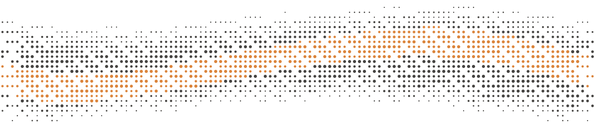

ROAMCAT
· 随 心 阅 ·
少一点依赖，多一点直接读懂。
Roam the English web like a cat.
BRAND BOARD
v0.0.1
PAPER · INK · PIXEL
LOCAL-FIRST
01 / MARKS
标志系统 扫描线漫游猫
猫由水平扫描线条切片拼成——既是猫，也是「在网页上逐行扫描英文」的动作本身。下面是全套资产的实际渲染。
MPL-2.0


装饰带 dot-wave：墨点 + 签名琥 #d97a2b 点，用于页头/页脚与加载过渡。
02 / COLOR
品牌色板 纸 · 墨 · 琥
色卡采用潘通式色票形制：上部色面、下部纸白签条（字标 + 编目号 + 色名 + 色值），悬停芯片可见对应 --rc-* token。用量仍是 70% 底 / 25% 墨 / 5% 琥——「墨色即强调」，琥珀越少越贵。
LIGHT · 纸墨 — RC-1xx
DARK · 砚台墨 — RC-2xx
PET · 伴读猫专属 — RC-3xx
伴读猫（正面坐姿 + 风线拖尾）是图标侧影猫的另一种演绎，共享琥珀主色。编目号 RC-xxx 仅作品牌图形沟通用，工程引用仍以 --rc-* / --pet-* token 为准。
03 / TYPE
字体系统 四种角色
Silkscreen 只用在短而响的位置；阅读文本走宋体栈；界面控件走系统无衬线；技术标签走等宽。
DISPLAY · 品牌/数字/键帽
Silkscreen → JetBrains Mono → Courier（woff2 内置，SIL OFL 1.1）
ROAMCAT 0123456789
ALT+SHIFT+T · MPL-2.0 · V0.0.1
READING · 阅读正文与标题
Noto Serif SC → Source Han Serif → 宋体 → Georgia · 15px / 1.6
像猫一样漫游英文世界
双语翻译把页面英文原位译成中英对照；阅读辅助保留原文，只给稀疏提示与按需救援。The quick brown fox jumps over the lazy dog.
UI · 界面功能字
Segoe UI → PingFang SC → Microsoft YaHei · 14px / 1.4
设置 · 模型服务 · 阅读辅助
控件、说明文字与表单标签使用系统无衬线，保证高密度信息下的清晰度。
MONO · 技术标签
ui-monospace → SFMono → Menlo → Consolas · 13px
n. · v. · POS · ERR_TIMEOUT
gloss.mjs · Alt+Shift+S · 2026-09-26T12:00:00Z
04 / MATERIAL
材质语言 轻拟物 · 左上光源
所有材质都是 token 化的 CSS 渐变与阴影，零图片。下面的控件是可直接按下/悬停的活样张。
KEYCAP 键帽
DALTESC
穹顶受光面 + 底沿裙边；按下裙边塌陷、整体下沉 —— 试一试
LACQUER 黑漆主键
翻译本页
浅色主题的主按钮 = 墨色漆面，顶缘一道暖高光
PORCELAIN 瓷白主键
翻译本页
深色主题主键 = 浅色黑漆的镜像反转
TRACK + KNOB 开关
铣槽轨道 + 瓷珠旋钮；黄铜只留给激活态点缀
GRAIN 纸纹
1px 低透明横纹，若有似无的纸面质地
FACE 瓷面卡片
象牙瓷面：左上径向高光 + 三段纵向渐变
05 / MOTION
动效语气 礼貌，不是表演
| TOKEN | 值 | 用途 |
|---|---|---|
| --rc-dur-instant / fast / med / slow | 80 / 160 / 280 / 440ms | 四档时长 |
| --rc-stagger-step | 32ms | 列表交错入场步距 |
| --rc-spring-soft / -pop | linear() 弹簧曲线 | 旋钮、卡片入场；不走匀速 ease |
| 顶层弹层协议 | allow-discrete + @starting-style | dialog / popover 统一进出 |
| prefers-reduced-motion | 全局收缩 | 弹层保留 80ms 淡入兜底 |
06 / VOICE
语气 诚实 · 克制 · 把选择权交给用户
WRITE 这样写
- 「翻译本页」「返回英文」
- 「按需求助」「稀疏提示」
- 「本地优先」「数据去向说清楚」
- 「可能超时、失败或不完整」
AVOID 不写
- 「一键全译」「AI 智能翻译」
- 「沉浸式学习」「高效背单词」
- 「完全离线」「绝对隐私」
- 任何对学习效果的承诺
07 / RULES
落地规则 速查
- 字标写法：
ROAMCAT（Silkscreen 全大写）或RoamCat · 随心阅；不写 “Roam Cat”。 - 标志留白 ≥ 图形高度 1/4；图形版最小 24px，应用图标最小 16px。
- 亮底猫体
#161511，暗底#ece7d9或#f0a63c；不套渐变/阴影，不拉伸，旋转 ≤ ±15°。 - 对外图形配方：纸底
#faf9f4+ 墨猫 + 签名琥#d97a2b点缀。 - 语义色（绿/红/黄/紫）只在语义位出现，不做装饰。
- 新色只进
src/styles/tokens.css，然后npm run gen:tokens；页面样式不覆写主题 token。 - 伴读猫
--pet-*在 floating-pet.js 有两处内联定义（data-theme + media 兜底），需同步改。 - Silkscreen 不排段落、不排中文；中英混排中文走宋体栈、拉丁/数字走 Silkscreen。
- 拒绝玻璃拟态、霓虹渐变、3D 贴图；图形元素只用扫描线 / 圆点 / 像素三件套。